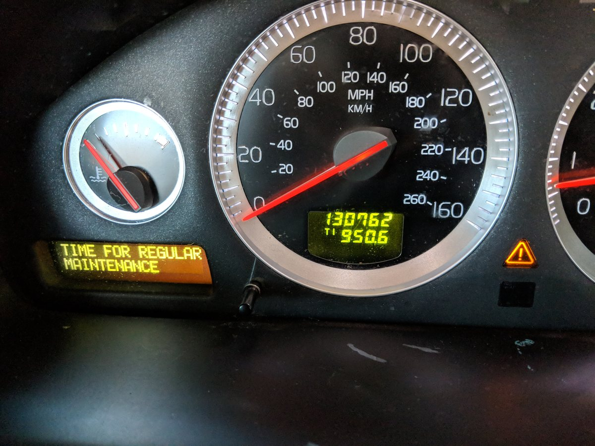

Executive coaching
Six structured sessions built directly on OBD data. Leadership presence, delegation, team dynamics, decision-making, or whatever the diagnostic actually surfaced. Renewable on completion.
Products & services
Everything below runs on the same argument: leadership is infrastructure, not training. Start with a diagnostic, a workshop or a keynote. They all lead to the same place, which is a team that keeps working when you step out of the room.
The front door

The name is a joke I am going to explain, because a joke nobody gets is just a name. The book is called CLUTCH. The whole argument runs on one extended metaphor: an organization is a drivetrain, leadership is the mechanism that lets its parts turn at different speeds without shearing, and the frameworks are the engine, the gearbox, the navigation and the handoff. So the diagnostic is the OBD, the port under the dashboard a mechanic plugs into before touching anything.
Most assessments tell a leader who they are. The OBD tells them where the engine is already knocking. It is an individual instrument: one leader, one read, one debrief.
It uses two validated instruments, CliftonStrengths® and the EQ-i 2.0. You receive both reports in full, exactly as their publishers issue them, unaltered. What I add is a third document in my own words: a written read of what the two results together suggest about how you operate under pressure, using CREATE and VOICES as the lens. Neither instrument makes that argument on its own, and neither publisher makes it for you.
Participants own their results. The report is designed to be useful by itself, portable to any coach or supervisor, and valid as a personal reference whether or not anything else follows. There is no obligation to continue.
Built on the diagnostic
Six structured sessions built directly on OBD data. Leadership presence, delegation, team dynamics, decision-making, or whatever the diagnostic actually surfaced. Renewable on completion.
A three-hour facilitated session where a team turns its OBD data into personal Owner’s Manuals: how each person leads, what they need from colleagues, where their edges are. Then they swap.
Ninety minutes on DELEGATE: define the win, establish the way, list the guardrails, expect the process, give the right support, agree on checkpoints, transfer ownership, encourage growth.
Speaking
Forty-five to sixty minutes, built for the room rather than the slide deck. Each one ends with something the audience can run on Monday.
Every other component in an engine is built to grip. Why emotional intelligence is a mechanical necessity rather than a soft skill, and what happens to an organization built without it.
Thirty diagnostic questions across six cylinders. The audience runs the diagnostic live, in the room, and leaves knowing which part of their operation is misfiring.
We promote people for being excellent at the work, then hand them an org chart and no system to run it with. Why the best individual contributor becomes the most expensive bottleneck.
Every system we build quietly assumes one kind of mind. What changes when they stop, and why neuroinclusive design makes an organization work better for everyone in it.
Independent schools
School budgets are set a year ahead, the work is bought by role tier rather than by product, and the person signing has to be able to put a line in a budget without having read the book.
So the school offer is laid out on its own terms: coaching for heads and senior teams, year-long cohorts for division directors and emerging leaders, decision rights, delegation and role clarity, in-service days and institutes, and strengths-based advisory design for students.
In development
A ninety-day cohort program for newly promoted leaders, the highest-risk transition in any talent pipeline. Dual-assessment baseline, four individual coaching sessions, a thirteen-week curriculum and live leadership labs, built on CREATE, VOICES, the 6C Decision Compass and DELEGATE. Cohorts of five to ten. Two to three hours a week.
Next step
Bring the thing that keeps landing back on your desk. We will work out together whether it is a people problem or a design problem. It is almost always a design problem.
Prefer email? matt@thatsgoodedesign.com